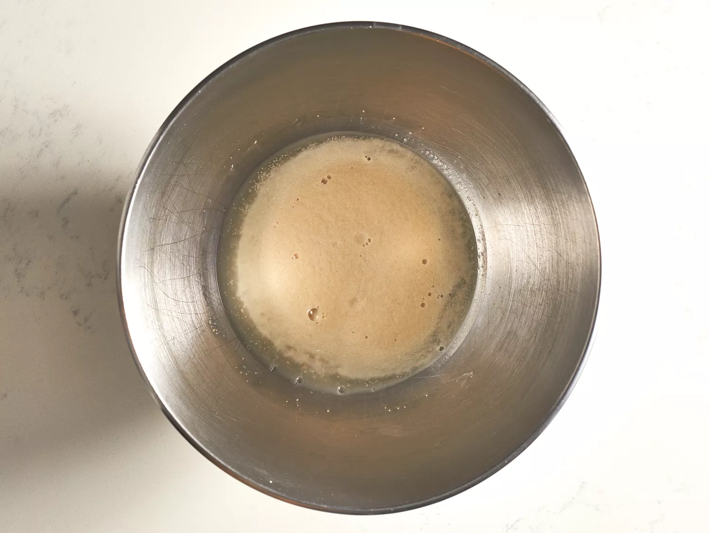

Pizza Recipe

Ingredients(Magherita Pizza)
- 1 cup warm water (110 degrees F/45 degrees C)
- 1 (.25 ounce) package active dry yeast
- 1 teaspoon white sugar
- 2 ½ cups bread flour
- 2 tablespoons olive oil
- 1 teaspoon salt
Directions
- Gather all ingredients. Preheat oven to 450 degrees F (230 degrees C), and lightly grease a pizza pan.

- Place warm water in a bowl; add yeast and sugar. Mix and let stand until creamy, about 10 minutes.

- Add flour, oil, and salt to the yeast mixture; beat until smooth. You can do this by hand or use a stand mixer fitted with a dough hook to make it easier.

- Let rest for 5 minutes.

- Turn dough out onto a lightly floured surface and pat or roll into a 12-inch circle.

- Transfer to the prepared pizza pan.

- Spread crust with sauce and toppings of your choice.

- Bake in the preheated oven until golden brown, 15 to 20 minutes. Remove from the oven and let cool for 5 minutes before serving.